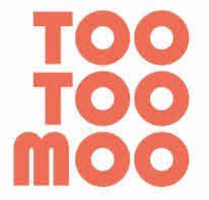
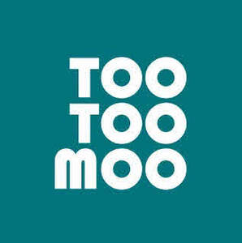

Trade Mark Journal No.2025/033 15 August 2025
UK00004244742 5 August 2025 (29,30,43)
Mark 1

Mark 2

- Class 29
- Noodle soup; Potato salad; Chicken salad; Salad oil; Caesar salad; Salads (Vegetable -); Vegetable salads; Potato salads; Pre-cut vegetable salads; Pre-cut vegetables for salads; Potato snacks; Soy-based snack foods; Tofu-based snacks; Vegetable-based snack foods; meat extracts; eggs; edible oils and fats; soups; dried soya beans; tofu; Potato crisps; prepared meals, ready meals and snack foods consisting principally of meat, fish, chicken, game, seafood, tofu, vegetables, potatoes, egg, mushrooms and/or cheese; frozen meals consisting primarily of fish, seafood, poultry or meat.
- Class 30
- Noodles; Wholemeal noodles; Udon noodles; Shrimp noodles; Vermicelli [noodles]; Soba noodles; Egg noodles; Asian noodles; Buckwheat noodles; Rice noodles; Chinese noodles; Somen noodles; Instant noodles; Fried noodles; Starch noodles; Dried noodles; Ramen noodles; Chinese noodles [uncooked]; Instant chinese noodles; Instant cooking noodles; Lo mein [noodles]; Udon noodles [uncooked]; Instant udon noodles; Udon (Japanese style noodles); Chow mein [noodle-based dishes]; Japanese noodle-based dish (Ramen); Ramen [Japanese noodle-based dish]; Chinese rice noodles (bifun, uncooked); Bean-starch noodles (harusame, uncooked); Pad thai (Thai stir-fried noodles); Stir-fried noodles with vegetables (Japchae); Dried and fresh pastas, noodles and dumplings; Pasta salad; Macaroni salad; Salad sauces; Salad dressings; Salad dressing; Salad dressings containing cream; Tortilla snacks; Rice snacks; Snack foods consisting principally of rice; Snack foods consisting principally of pasta; Snack foods made of whole wheat; Flavourings for snack foods [other than essential oils]; rice; couscous; Flour; Preparations made from cereals; Bread; Pastries; Confectionery; ices; ice; sugar, honey, treacle; salt; pepper; mustard; Vinegar; Sauces; Sauces [condiments]; Condiments; spices; seasonings; relishes; chutney; fruit sauces; cooked rice; noodle-based prepared meals; rice-based prepared meals; prepared meals, ready meals and snack foods consisting principally of rice, noodles and/or couscous; sandwiches; Meat pies; Vegetable pies; Fruit pies; green tea; herbal tea; Pizza; Pastry; Pasta products; Dessert puddings; Puddings for use as desserts; Instant dessert puddings; prawn crackers; spring rolls; frozen meals consisting primarily of vegetables, rice or pasta.
- Class 43
- Restaurant information services; Providing restaurant services; Carry-out restaurants; Fast food restaurants; Providing reviews of restaurants and bars; Provision of food and drink in restaurants; Restaurant services for the provision of fast food; Reservation and booking services for restaurants and meals; Making reservations and bookings for restaurants and meals; Services for providing food and drink; temporary accommodation; restaurant services; catering services; contract food services; preparation of food and drink; restaurant services for the provision of fast food; Take-away food services; Take-away fast food services; Providing of food and drink via a mobile truck; Providing food and drink in restaurants and bars; Takeaway services; provision of information, advisory and consultancy services in relation to the aforesaid services.
EARMARK INVESTMENTS LIMITED
Representative: Murgitroyd & Company